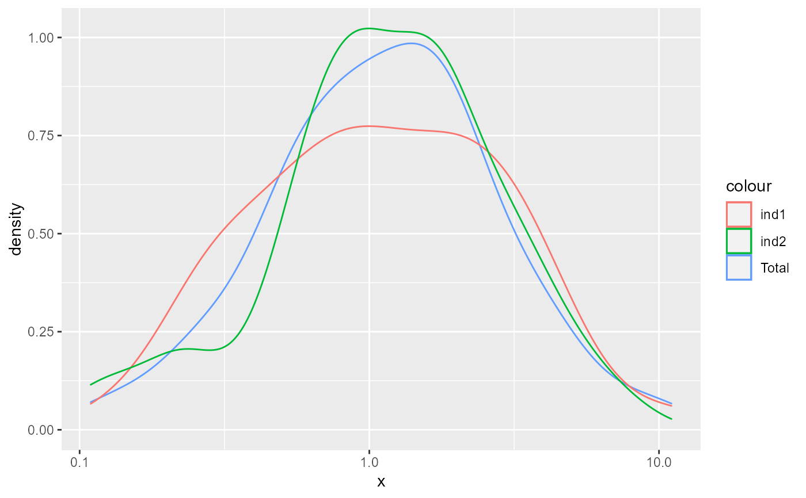

Stratified sampling by clusters or types
Sampling_via_cluster( x, num = length(x), replace = FALSE, order.value = NULL, ... ) Sampling_by_sort( x, num = length(x), log10 = FALSE, n_group = 3, replace = TRUE )
| x | A vector represents the cluster or type, only support numeric value now. |
|---|---|
| num | The number of sampling. Default as |
| replace | The way of sampling. See |
| order.value | The vector used for ordering. Default is |
| ... | Parameters of function |
| log10 | Whether to log10-trans the |
| n_group | Number of group to be devided. Default is 3. |
Result of Sampling_via_cluster is the index of sampled
items from the input x.
Other Algorithm assessment:
Assessment_via_cluster(),
Getting_Asses_results(),
Score_algorithms_interval(),
Score_algorithms_sort(),
Scoring_system()
#> x #> 1 2 3 4 5 6 7 8 9 10 #> 5 11 13 11 10 15 11 11 9 4#> #> 1 2 3 4 5 6 7 8 9 10 #> 1 2 2 2 3 4 2 2 1 1set.seed(1) N <- 100 x <- stats::rlnorm(N) ind1 <- Sampling_by_sort(x, N/2) ind2 <- sample.int(length(x), N/2) library(ggplot2) ggplot() + geom_density(aes(x = x, color = "Total")) + geom_density(aes(x = x[ind1], color = "ind1"), alpha = 0.8) + geom_density(aes(x = x[ind2], color = "ind2"), alpha = 0.6) + scale_x_log10()